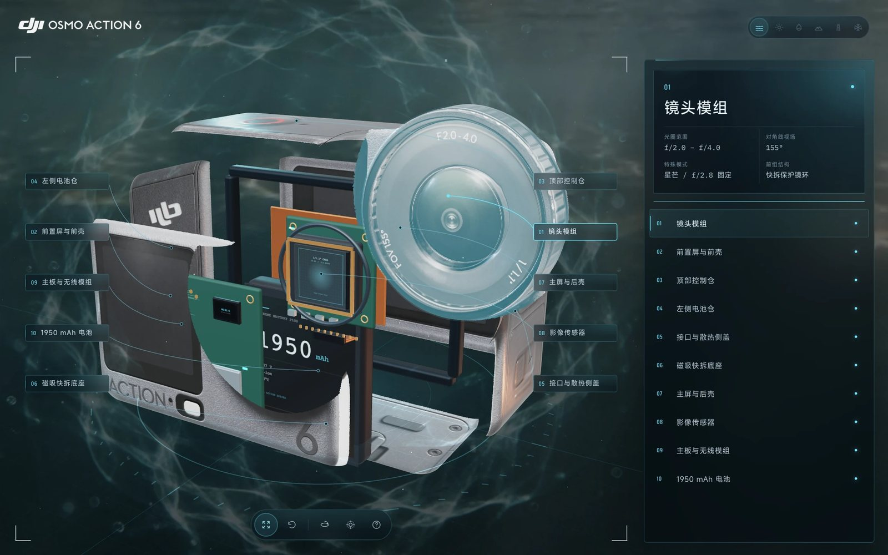
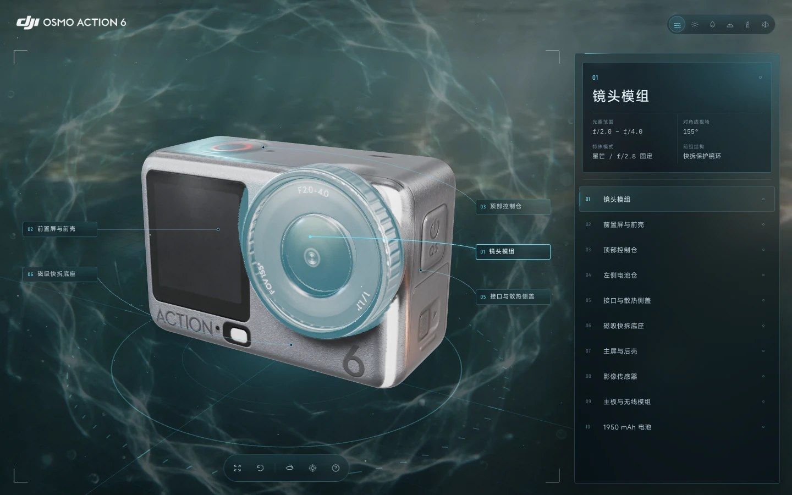
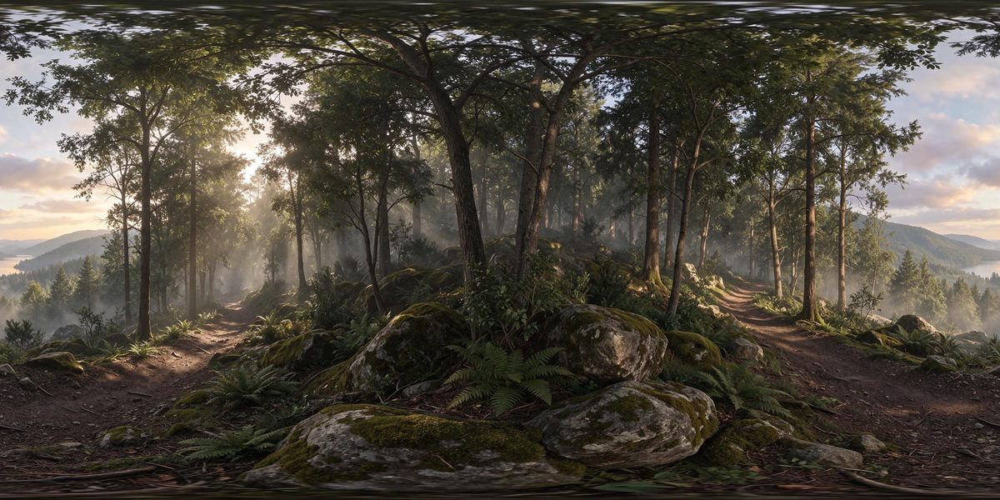

N体是一条 AI 原生链路，用来搭建 N 维体验界面。它把产品数据转译为可感知、可操作的体验。DJI Osmo Action 6，是第一个样本。


示例产品 / DJI Osmo Action 6
N体的第一性目标，不是生产一个 3D 页面，而是验证 AI 能否从产品数据出发，搭建可感知价值的 N 维体验界面。Osmo Action 6 是样本，不是终点。

AI 与数据驱动，构成 N体链路引擎。
数据定义产品，模型生成链路，终端承接体验。
同一套引擎，读取不同产品的特征，生成各自的体验链路集。用户不必想象产品，而是直接进入它。
体验，是增长的入口。
从一台运动相机开始，N体正在验证一条适用于所有消费品的体验链路。